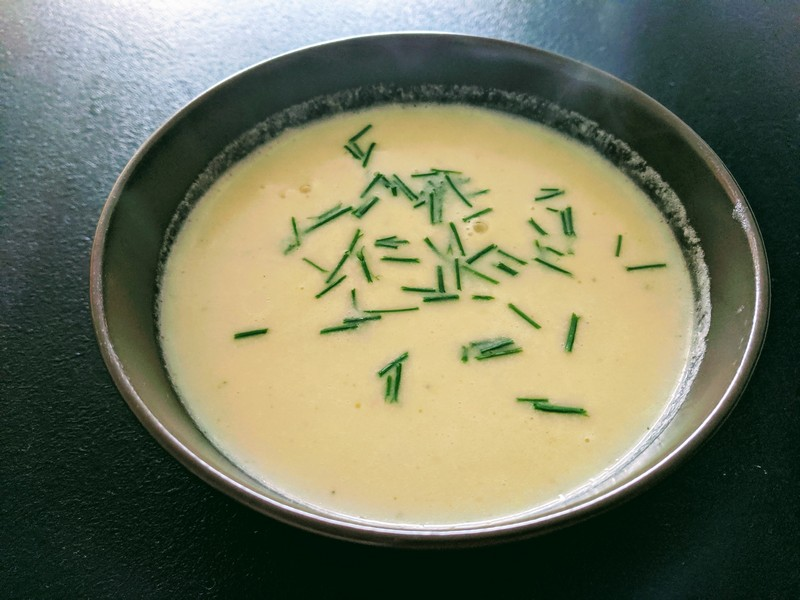

Winter is coming, a tak nezbývá než zásobit se recepty na vydatná jídla, která vás zahřejí a zahubí potenciál k nachlazení hned z počátku. Tento recept na krémovou česnečku, objevený ve vskutku prehistorickém čísle Albert magazínu, je za mě rozhodně adeptem na polévku sezony :-)
- 90g másla
- 4 stroužky česneku
- 2 cibule nakrájené na kostičky
- 250g brambor nakrájených na kostičky
- půl litru mléka
- půl litru vývaru
- sůl, čerstvě mletý pepř
- bylinky na ozdobu
- krutony
V hrnci rozehřejeme třetinu másla a ze všech stran na něm opečeme tři celé oloupané stroužky česneku. Až zezlátnou, přidáme cibuli a opékáme dvě až tři minuty. Pak přidáme zbývající máslo a brambory a znova opékáme deset minut. Jakmile změkne cibule, přilijeme mléko s vývarem a vaříme tak dlouho, dokud nejsou měkké i brambory. Na závěr polévku rozmixujeme tyčovým mixérem, dochutíme solí, pepřem a prolisovaným posledním stroužkem česneku. Podáváme s krutony (které jsem neměla, tak třeba příště) a čerstvými bylinkami (poslední dosud zimě odolávající zbytek pažitky z balkonové zahrádky). Dobrou chuť!
